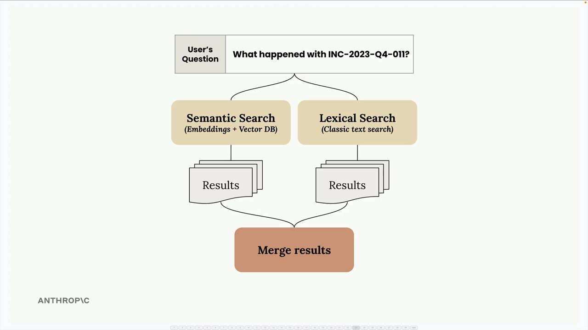
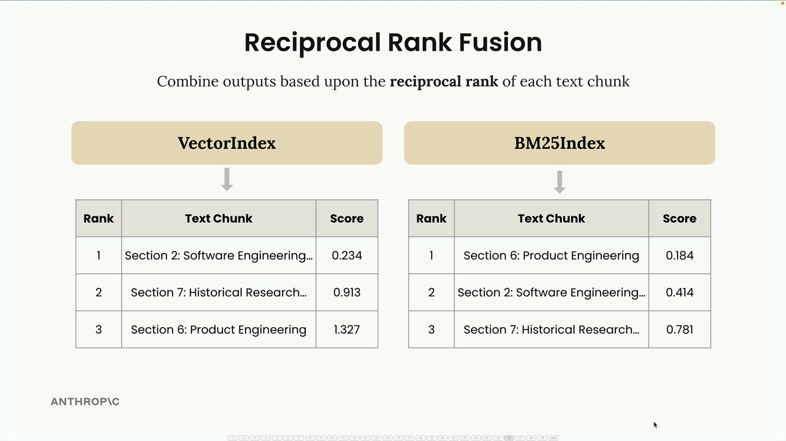
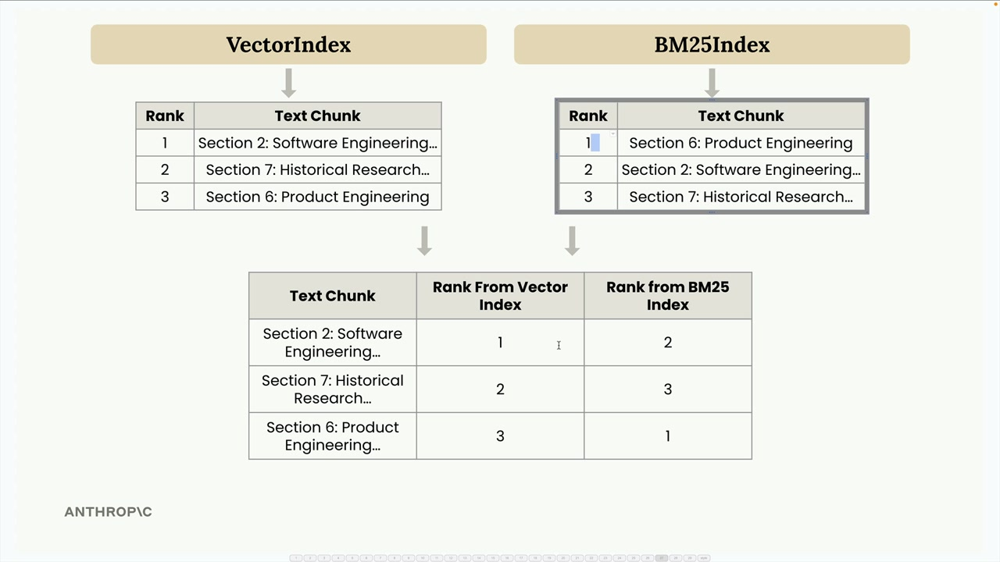
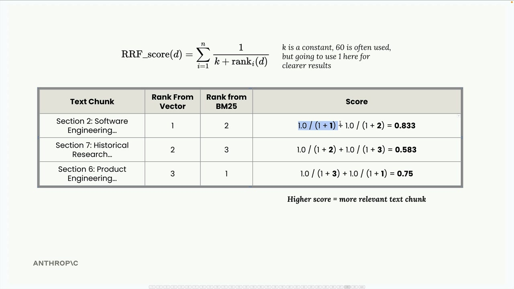
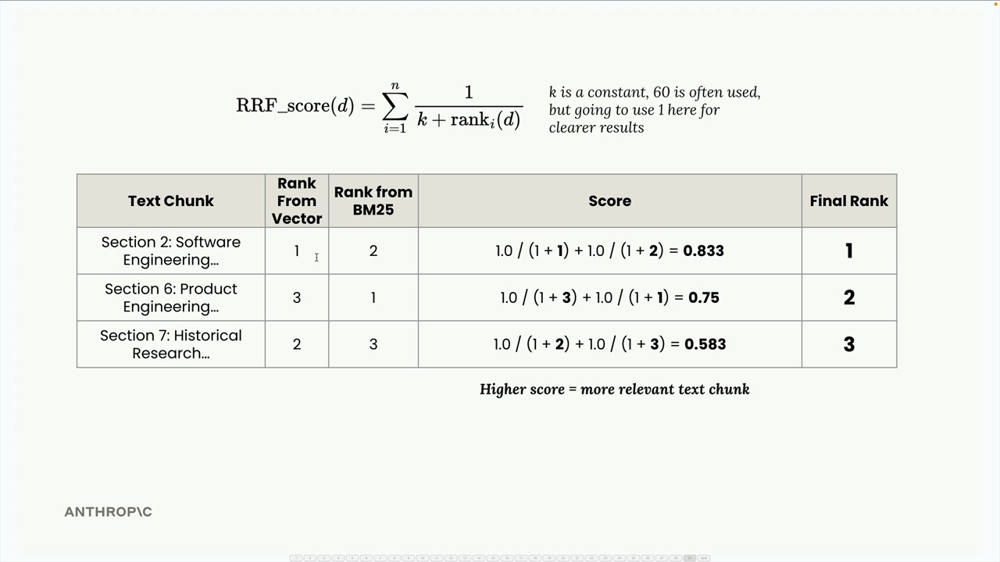
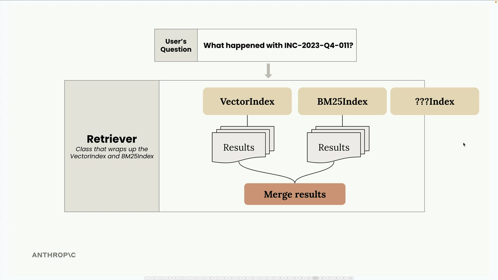
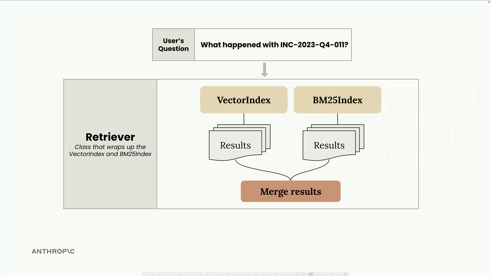

Многоиндексный конвейер RAG
Чему научитесь
Видео 6:45 и текст урока
К концу урока вы сможете:
- объединить векторный и BM25-индексы в класс
Retriever; - считать reciprocal rank fusion (RRF) вручную;
- расширять конвейер новыми индексами через общий интерфейс.
Видео и текст урока.
Смотреть урок на Skilljar A Multi-Index RAG pipeline · 6:45Мы сделали отдельные реализации семантического поиска (на векторных эмбеддингах) и лексического (на BM25). Пора объединить их в единый конвейер поиска, который использует сильные стороны обоих подходов.
Многоиндексная архитектура
У классов VectorIndex и BM25Index почти одинаковый API: у обоих есть методы add_document() и search(). Благодаря этому их легко обернуть в новый класс Retriever.

Retriever — координатор: он передаёт запрос пользователя в оба индекса, собирает их результаты и объединяет методом reciprocal rank fusion (RRF).
Что такое reciprocal rank fusion
Объединить результаты разных методов поиска — не то же самое, что склеить списки. У каждого метода своя система оценок, поэтому нужен способ привести их рейтинги к общему знаменателю и честно объединить.

Разберём RRF на примере. Допустим, ищем информацию об «INC-2023-Q4-011» и получаем:
- VectorIndex: Section 2 (ранг 1), Section 7 (ранг 2), Section 6 (ранг 3);
- BM25Index: Section 6 (ранг 1), Section 2 (ранг 2), Section 7 (ранг 3).

Сводим их в одну таблицу с рангами каждого фрагмента в обоих индексах и применяем формулу RRF:
RRF_score(d) = Σ(1 / (k + rank_i(d)))
Здесь k — константа (часто 60, но мы возьмём 1, чтобы результаты были нагляднее), а rank_i(d) — ранг документа d в i-м рейтинге.

Для нашего примера:
- Section 2: 1.0/(1+1) + 1.0/(1+2) = 0.833;
- Section 7: 1.0/(1+2) + 1.0/(1+3) = 0.583;
- Section 6: 1.0/(1+3) + 1.0/(1+1) = 0.75.

Итоговый рейтинг: Section 2 (0.833), Section 6 (0.75), Section 7 (0.583). Это интуитивно понятно: Section 2 хорошо показал себя в обоих индексах, поэтому поднимается наверх.
Детали реализации
Класс Retriever оборачивает несколько поисковых индексов и даёт единый интерфейс:
class Retriever:
def __init__(self, *indexes: SearchIndex):
if len(indexes) == 0:
raise ValueError("At least one index must be provided")
self._indexes = list(indexes)
def add_document(self, document: Dict[str, Any]):
for index in self._indexes:
index.add_document(document)
def search(self, query_text: str, k: int = 1, k_rrf: int = 60):
# Get results from all indexes
all_results = []
for idx, results in enumerate(all_results):
for rank, (doc, _) in enumerate(results):
# Track document ranks across indexes
# Apply RRF scoring formula
# Return merged and sorted results
Ключевая мысль: если разные реализации поиска имеют одинаковый API, их легко объединять без жёсткой связанности.
Проверяем гибридный подход
Помните прошлую проблему: поиск «what happened with INC-2023-Q4-011?» только по векторам давал неожиданные результаты. Инцидент по кибербезопасности (Section 10) шёл первым, но вторым оказывался финансовый анализ (Section 3) вместо более подходящего раздела о разработке ПО.
С гибридным Retriever результаты гораздо лучше:
- Section 10: Cybersecurity Analysis — Incident Response Report (самый подходящий);
- Section 2: Software Engineering — Project Phoenix Stability Enhancements (второй);
- Section 5: Legal Developments (третий).
Это показывает, как сочетание семантического и лексического поиска преодолевает ограничения каждого подхода в отдельности.
Расширяемость

Retriever: вопрос уходит в VectorIndex и BM25Index, плюс место для нового индекса «???Index».Красота этой архитектуры — в расширяемости. Поскольку все индексы реализуют один протокол SearchIndex с методами add_document() и search(), можно легко добавлять новые методы поиска:

Retriever оборачивает оба индекса: вопрос про INC-2023-Q4-011 уходит в каждый, результаты сливаются.Нужен индекс по ключевым словам? Поиск по графу? Специализированный индекс для предметной области? Достаточно реализовать тот же интерфейс, и Retriever автоматически включит его в слияние.
Модульный подход сохраняет каждую реализацию поиска сфокусированной и тестируемой и даёт чистый способ объединить их сильные стороны в итоговой системе.
Дальше
Раздел о RAG пройден — проверьте себя пробным экзаменом. Официального квиза Skilljar у этого раздела нет. Следующий раздел курса — возможности Claude: thinking, изображения, PDF, цитаты и prompt caching.
Оригинал урока: A Multi-Index RAG pipeline.